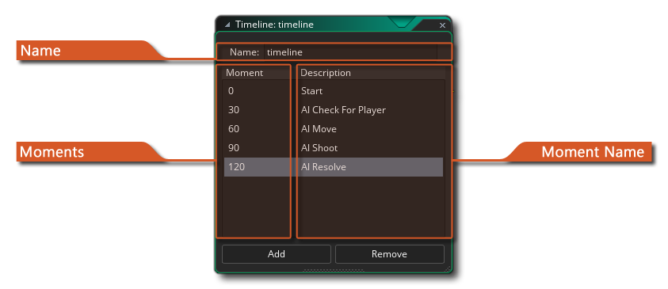
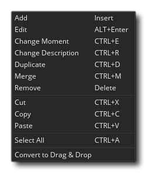
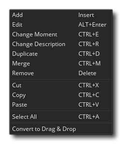

 En la mayoría de los juegos, querrás que sucedan ciertas cosas en momentos precisos en el tiempo. Ahora, puede tratar de lograr esto utilizando los eventos de alarma, pero cuando las cosas se vuelven demasiado complicadas, esto no funcionará más, especialmente porque está limitado a solo doce alarmas. Es por eso que tenemos el recurso de línea de tiempo. En una línea de tiempo, usted especifica qué acciones deben suceder en determinados momentos del juego, y puede usar todas las acciones que también están disponibles para un objeto en sus diferentes eventos o código para definirlo. Una vez que crea una línea de tiempo, puede asignarla a un objeto, y la instancia de ese objeto ejecutará las acciones en los momentos indicados cuando se coloque o se cree dentro de una habitación.
Por ejemplo, suponga que quiere hacer un guardia y que este guardia debe moverse 20 pasos de tiempo hacia la izquierda, luego 10 hacia arriba, luego 20 hacia la derecha, luego 10 hacia abajo y finalmente detenerse. Para lograr esto, puede hacer una línea de tiempo donde empiece por establecer un movimiento hacia la izquierda. Entonces crearías el momento 20 (un "momento" es solo otra manera de decir "paso del juego") y establecerías un movimiento hacia arriba, luego en el momento 30 un movimiento hacia la derecha, en el momento 50 un movimiento hacia abajo y finalmente en el momento 60 detendría el movimiento. Una vez hecho esto, puede asignar esta línea de tiempo al guardia y el guardia hará exactamente lo que usted planeó. Incluso puede configurar una alarma en la línea de tiempo para que se repita después de un cierto período de tiempo y de esta manera su guardia puede patrullar un área. También puede usar una línea de tiempo para controlar su juego de forma más global, por ejemplo, creando un objeto de controlador invisible, luego una línea de tiempo que en ciertos momentos crea enemigos, y luego asignándola al objeto de controlador y colocando una instancia en la habitación. Esta es una manera fácil de generar engendros cronometrados de los enemigos.
Para crear una línea de tiempo, haga clic derecho  en el recurso de línea de tiempo en el árbol de recursos y seleccione "Crear". Esto abrirá la ventana que se muestra en la parte superior de esta página con las siguientes secciones:
en el recurso de línea de tiempo en el árbol de recursos y seleccione "Crear". Esto abrirá la ventana que se muestra en la parte superior de esta página con las siguientes secciones:
Aquí le da un nombre a su recurso de línea de tiempo. Esto solo debe contener caracteres alfanuméricos o la barra inferior "_" y ser único, ya que se usará para hacer referencia a su línea de tiempo a través del código. Este nombre también será la identificación única de la línea de tiempo que se puede usar en acciones DnD ™ o funciones de código para identificar la línea de tiempo.
Puede establecer el valor del momento aquí. El valor del momento se calcula como el número de pasos del juego después de que la línea de tiempo ha comenzado. Entonces, si tiene una línea de tiempo con momentos en 0 y en 60, entonces el momento 0 se activará cuando se inicie la línea de tiempo y el momento 60 60 pasos después. Si la velocidad de su habitación también se establece en 60, entonces el momento 60 ocurrirá un segundo después de que se inicie la línea de tiempo. Puedes hacer un doble clic
en el valor del momento o puede usar el botón derecho
menú y seleccione "cambiar" (consulte la sección en el menú de botones a continuación) para cambiarlo. Para agregar un nuevo momento, simplemente haga clic en el botón Agregar en la parte inferior del editor. Al agregar nuevos momentos, se abrirá el código o el editor de acciones donde puede agregar las funciones o DnD ™ a las que desea llamar en ese momento.
Para ayudarlo a comprender lo que está haciendo su línea de tiempo, se le permite dar un nombre a los momentos para identificarlos. Esto es simplemente una cadena y no se usará en el código del juego ni en ningún otro lugar, ya que es solo para organizar y comprender lo que hace tu línea de tiempo. Puedes hacer un doble clic
El editor de línea de tiempo le permite usar  +
+  seleccione todos los momentos entre el primer clic
seleccione todos los momentos entre el primer clic  y el segundo clic
y el segundo clic  , o puedes usar
, o puedes usar  /
/  +
+  hacer clic en momentos únicos para seleccionarlos de forma independiente. Los momentos de la línea de tiempo se pueden editar con el botón derecho del mouse
hacer clic en momentos únicos para seleccionarlos de forma independiente. Los momentos de la línea de tiempo se pueden editar con el botón derecho del mouse  menú en uno de los elementos seleccionados: 
menú en uno de los elementos seleccionados: 
Esta opción le permite agregar un nuevo momento a la línea de tiempo. Se agregará directamente después del último momento, por lo tanto, si el último momento de la línea de tiempo es 120, el próximo que agregue será 121. Usted puede cambiar la posición del momento haciendo doble clic.
Esto abre el momento actual de la línea de tiempo para la edición.
Cambia el valor para el momento de línea de tiempo seleccionado. Esto es lo mismo que un doble clic lento
Cambie el nombre descriptivo para el momento de la línea de tiempo seleccionada. Esto es lo mismo que un doble clic lento
Esto duplicará todos los momentos seleccionados de la línea de tiempo y los agregará consecutivamente al final de la línea de tiempo actual.
Si selecciona dos o más momentos de una línea de tiempo, puede optar por fusionarlos. Esto creará un único momento en la línea de tiempo en la posición del primer momento seleccionado con todos los códigos y acciones juntos al mismo tiempo.
Esto eliminará el momento (o momentos) seleccionado de la línea de tiempo.
Estas opciones le permiten cortar, copiar o pegar uno o más momentos de la línea de tiempo. Puede usar los atajos de teclado estándar aquí también:
/
+ X,
Con esta opción, puede seleccionar todos los momentos en una línea de tiempo. Los momentos seleccionados se pueden eliminar, fusionar, duplicar, cortar o copiar.
Los momentos de la línea de tiempo se crearán utilizando el método elegido al crear el proyecto, ya sea utilizando el código o usando las acciones Arrastrar y soltar. Con esta opción puede convertir de uno a otro, independientemente del tipo de proyecto.